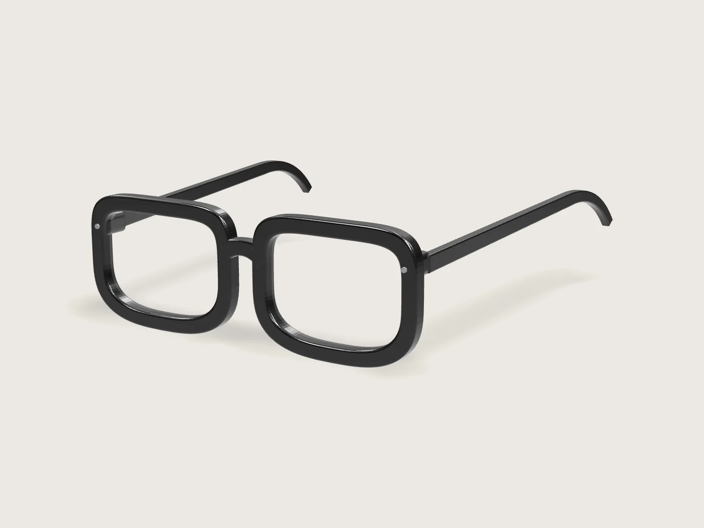
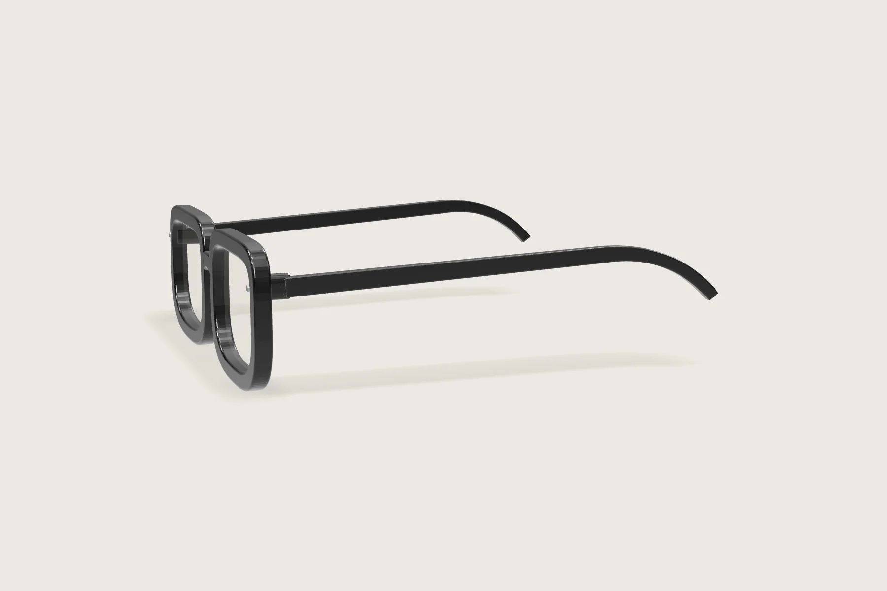
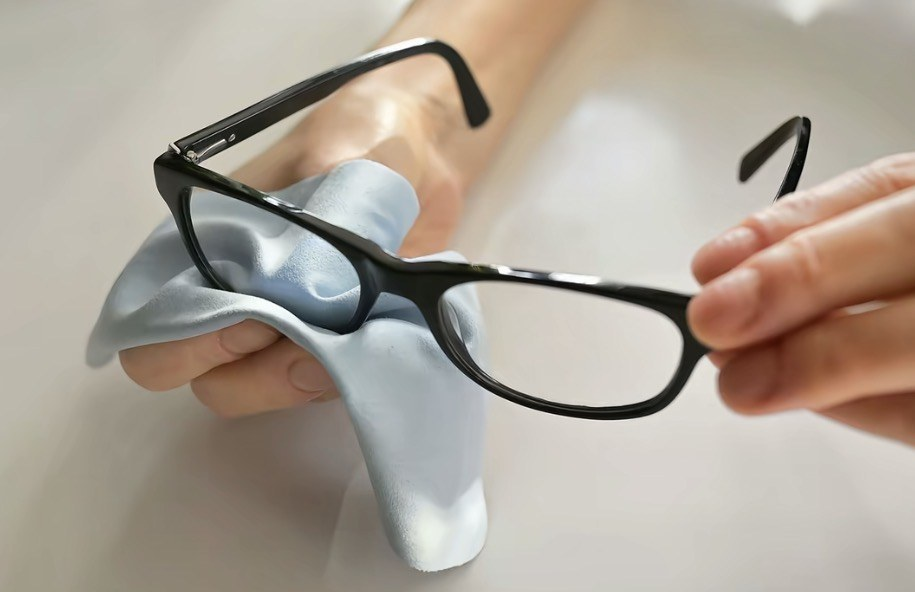

Für lange Bildschirmtage.
Zeitlose Fassungen mit Gläsern, die einen Teil des blauen Bildschirmlichts filtern. Mit oder ohne Sehstärke.
Kollektion ansehenSehwerk
Wir verbringen mehr Stunden vor Bildschirmen als je zuvor. Also haben wir Brillen gestaltet, die man gern den ganzen Tag trägt – ruhig im Design, leicht auf der Nase, mit Gläsern für helles Bildschirmlicht.
Blaulichtfilter
Weniger blaues Licht.
Gleich klare Farben.
- 01Bildschirme senden viel Licht im blauen Bereich um 450 nm aus.
- 02Die Beschichtung unserer Gläser reflektiert einen Teil davon – sichtbar am feinen bläulichen Schimmer.
- 03Die übrigen Farben gehen fast unverändert durch. Das Glas bleibt klar.
Kollektion
Sechs Fassungen.
Ein ruhiger Gedanke.
Alle Brillen inklusive Blaulichtfilter-Gläsern ohne Sehstärke, Etui und Mikrofasertuch. Sehstärke gegen Aufpreis.
Die Fassungen
01 / 06

Gemacht für jeden Tag
Details, die man
erst beim Tragen merkt.
- Acetat
- Aus Platten geschnitten, getrommelt und von Hand poliert – warm in der Hand, leicht auf der Nase.
- Gläser
- Kunststoffgläser mit Hartschicht, Entspiegelung und Blaulichtfilter. Auf Wunsch mit Ihrer Sehstärke.
- Lieferumfang
- Jede Brille kommt im festen Etui mit einem Mikrofasertuch für streifenfreie Gläser.

Zubehör
Das Mikrofasertuch.
Ultrafeine Mikrofaser nimmt Fingerabdrücke und Staub auf, ohne Kratzer und ohne Spray. Liegt jeder Brille bei – und ist einzeln oder im Set erhältlich.
Versand ab Lager, Brillen mit Sehstärke in 7–10 Werktagen.
Rückgabe ohne Angabe von Gründen bei Brillen ohne Sehstärke.
Gewährleistung auf Fassung und Gläser.
Fragen
Gut zu wissen.
Was bewirkt ein Blaulichtfilter?
Die Beschichtung reflektiert einen Teil des blauvioletten Lichts, das Bildschirme und LED-Licht aussenden. Viele Menschen empfinden das bei langer Bildschirmarbeit als angenehmer. Ein Blaulichtfilter ersetzt keine augenärztliche Untersuchung – bei Beschwerden wenden Sie sich bitte an Ihre Augenärztin oder Ihren Augenarzt.
Verändern die Gläser die Farben auf dem Bildschirm?
Kaum. Die Gläser sind klar; auf der Oberfläche sehen Sie je nach Lichteinfall einen feinen bläulichen Reflex. Für farbkritische Arbeit empfehlen wir, die Brille kurz abzunehmen.
Wie bestelle ich eine Brille mit Sehstärke?
Wählen Sie bei der Brille „mit Sehstärke“. Nach der Bestellung schicken Sie uns Ihren Brillenpass oder Ihre Refraktionswerte per E-Mail. Wir fertigen die Gläser und melden uns bei Rückfragen.
Welche Fassung passt zu mir?
Bei jeder Fassung finden Sie Glasbreite, Stegbreite und Bügellänge. Vergleichen Sie diese Werte mit den Zahlen auf der Innenseite Ihres aktuellen Brillenbügels – so finden Sie eine ähnliche Größe.
Wie pflege ich die Gläser?
Grobe Partikel zuerst abpusten oder kurz mit lauwarmem Wasser abspülen, dann mit dem beiliegenden Mikrofasertuch trocknen. Bitte keine Papiertücher oder Kleidung verwenden.